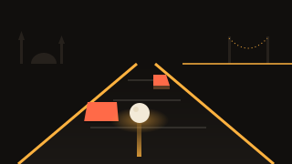

Gece Yarısı Karşıdan Karşıya
Koca martı geliyor, ilerle!
Dokun ve zıpla
Kaydır: sola, sağa, geri · Klavyede oklar ya da WASD
Karakter · cüzdanda 0 simit
Duraklatıldı
Bu tarayıcı 3D çizimi (WebGL) desteklemiyor. Başka bir tarayıcıda dene ya da donanım hızlandırmayı aç.
Nasıl oynanır?
Gece yarısı İstanbul'da karşıdan karşıya geçebildiğin kadar geç. Ekrana dokununca karakterin bir şerit ileri zıplar; parmağını sola, sağa ya da aşağı kaydırarak yön değiştirirsin. Klavyede yön tuşları ya da WASD kullanılır, P tuşu oyunu duraklatır. Taksi ve dolmuşlar arasındaki boşluğu kolla; tramvay hattında zil çalıp kırmızı lambalar yanıp sönüyorsa bekle. Boğaz'a düşmemek için kayan vapurların ve sandalların üstüne bin, ama seni ekranın kenarına taşımadan in. Kaldırımdaki simitleri topla; biriktirdiğin simitlerle Tekir, Martı ve Hamal karakterlerini açarsın. Bir yerde fazla oyalanırsan koca martı gelip seni kapar, o yüzden ilerlemeye devam et. Skorun ulaştığın en uzak şerittir; en iyi skorun, simitlerin ve açtığın karakterler yalnızca bu cihazda saklanır ve oyun internetsiz de çalışır.
Benzer oyunlar
-
 Aksiyon
AksiyonCam Ustası
Gece cam atölyesinde 3D koridor: dokun, bilye fırlat, camları kır. Çeşmibülbül camları, kayan paneller, kombo atışlar ve kırılmaması gereken nazar boncuğu kapıları.
-
 Aksiyon
AksiyonMarmaray Koşusu
Gece Marmaray tünelinde 3D üç şeritli sonsuz koşu: gelen trenlerden kaç, bariyerden zıpla, tabelanın altından kay, İstanbulkart jetonu topla, Boğaz'a çık.
-

AksiyonYokuş Aşağı
Gece İstanbul yokuşlarında sodyum ışıklı 3D pistte yuvarlanan top. Sağa sola yönlendir, kor bloklardan kaç, rampalardan uç; günlük pist ve sonsuz mod.